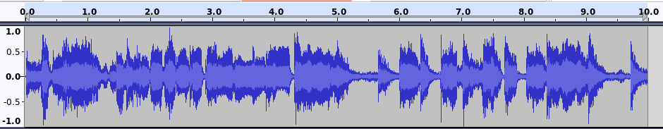
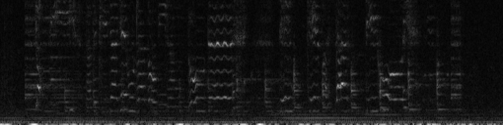
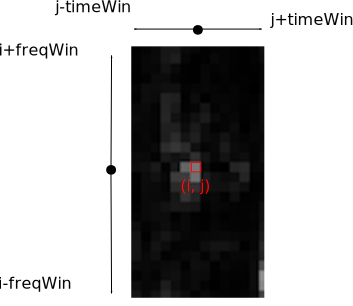
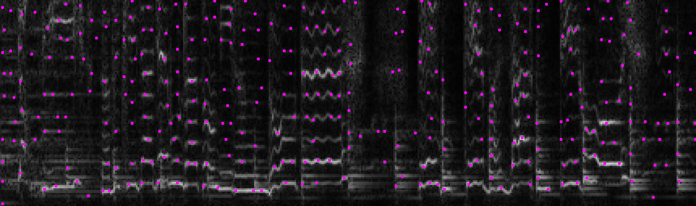
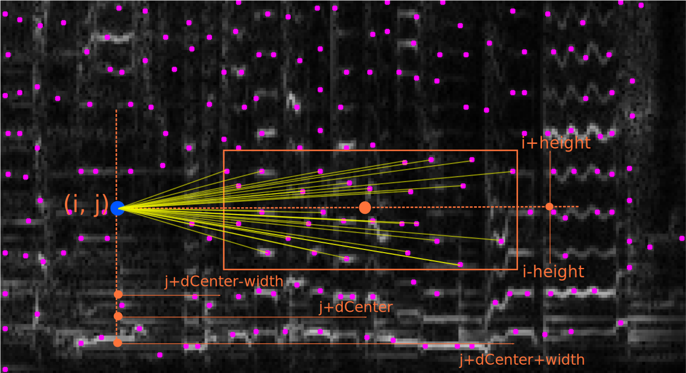
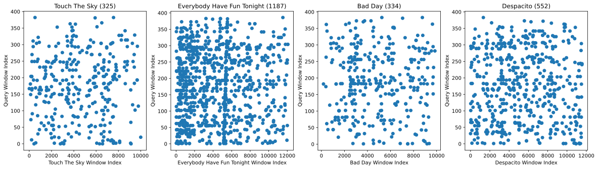
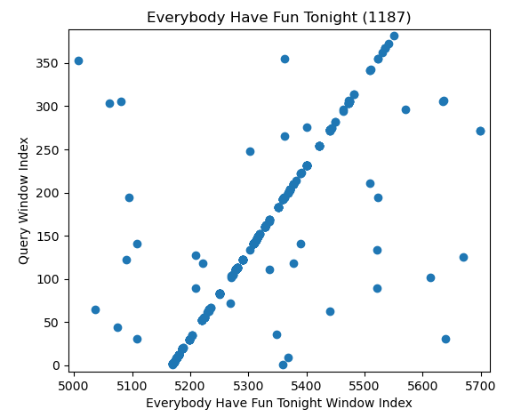
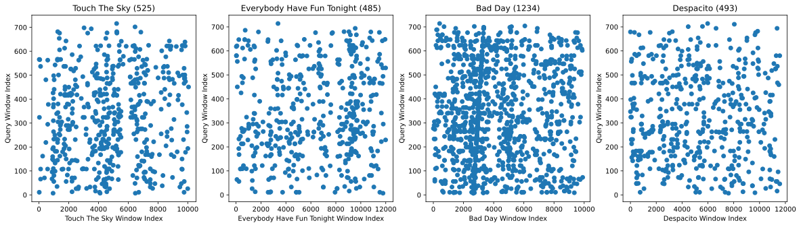
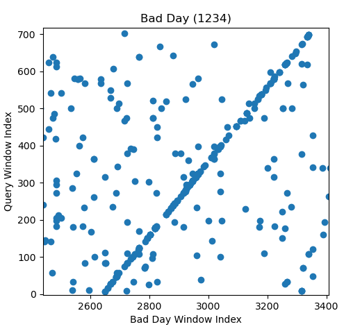

Final Project: The Shazam Algorithm Background
Chris Tralie

The Shazam Challenge
Contemporary smart phones are capable of doing an incredible task in audio recognition: if you hold your phone up in a crowded area while music is playing in the background, it will, in the span of mere seconds, be able to tell you the name and artist behind the tune that's playing.
The design constraints behind such an audio fingerprinting algorithm are quite stringent. The method must be robust to different transformations of audio, such as
- Changes in loudness
- Background noise
- Low quality audio / distorted audio
The first such algorithm to do audio fingerprinting successfully at scale has been dubbed the "Shazam algorithm" (since it gave rise to the Shazam app, which is now ubiquitous). Given the above constraints, the approach is surprisingly simple, even for those without specialized knowledge.
Click here to read the paper on this technique. I will distill each step of the paper below, and you will implement these steps in C++ in the final assignment.
Audio Spectrograms
One of the key steps to a successful audio fingerprinting algorithm is getting the right representation of audio. By default, digital audio is represented by a long one dimensional array of numbers. This array typically has 44100 elements per second that each range between -1 and 1. For instance, let's start with the following 10 second clip from Luis Fonsi's Despacito
If we plot the elements of this array in a program like Audacity, we get the following plot
Though we can roughly pick out some of the beats, this representation turns out to be less amenable to analysis than another common representation, known as a spectrogram. A spectrogram is a way of turning audio into an image, in which the x-axis represents time and the y-axis represents "frequency content"; that is, higher up on y are pixels corresponding to higher pitches, and movement to the right indicates progression in time. A bright pixel indicates that there is a lot of energy at that time and frequency, and a darker pixel indicates that there is less energy.
Code has been provided with your assignment to generate spectrograms from audio clips. For example, if we run the following code
We get the image belowfrom 0 to 2756hz sampled at 1 pixel every 43 milliseconds.

Lots of interesting features are present in this image.
- Beats are visible as vertical lines
- Harmonics of instruments and vocals are visible as evenly spaced horizontal lines
- We even see some vocal vibrato in the wiggly lines about halfway through!
Even if we get a very degraded version of the Despacito clip, as played through crappy laptop speakers
We still see a lot of the same features in the image

So this seems like a good starting point!
Shazam Step 1: Fingerprint Constellations
The first insight of the Shazam technique is that bright spots in the spectrogram tell us more than dark spots. In particular, we want to find maxes of brightness in the image which are brighter than their surrounding pixels in some region. These are referred to as anchors, and all together, they form what's known as a constellation. Even if the audio gets quieter, the maxes will still be the greatest relative to their neighbors. Furthermore, they are some of the most important pixels in the image, and are the least likely to disappear in the presence of noise or other distortions.
More specifically, a pixel in the spectrogram is said to be an anchor if it is greater than all other pixels in a rectangle surrounding it. The rectangle is specified by the parameters timeWin and freqWin, which are half of the length of a rectangle in the time and frequency axes, respectively, centered at the pixel in question. The image below shows an example of a max

Below is the constellation of anchors on the Despacito clip:
Shazam Step 2: Pairing Anchors in Target Zones
One way to make anchors even more descriptive is to associate them to other anchors slightly ahead of them in time. Then, we actually capture some of the temporal evolution of the song, rather than just isolated time frequency points. This is the basis of the Shazam fingerprint. In particular, for each anchor, we search for other anchors in a rectangle slightly shifted to the right (forward in time), which is known as the target zone. This is depicted in the image below for the dark blue anchor

We have the following parameters we can control here:
-
dCenterrefers to the time difference between the anchor and the center of the box -
width(< dCenter) refers to half of the width of the rectangle around its center -
heightrefers to half of its height in frequency above and below its center
Shazam Step 3: Hashing Fingerprints
Soon we are going to create a database of many, many fingerprints across a collection of music, so we need a way to look them up quickly. But we've already implemented a way to look things up quickly in homework 5: a hash table. For this, we need a hash code to associate a consistent number to each fingerprint. We can create a hash code based on three pieces of information:
- The frequency index of the first anchor,
f1 - The frequency index of the second anchor,
f2 - The time lag between the two anchors,
dw = win2 - win1
\[ f1 + f2*256 + dw*256*256 \]
By this formula, there are 224 ≈ 17 million unique hash codes. For the parameters in this assignment, we'll usually get around 100,000 fingerprints per song. This means even if every single fingerprint was unique (which is extremely unlikely), we would only be able to store 170 songs in the database. In practice, we will store more songs than this, and there will be many songs that have fingerprints in common, but the hash table still works quite well.
Shazam Step 4: Audio Queries
Now that we know how to compute fingerprints and we have a way of hashing them into a large database for efficient search, we are ready to try to match the fingerprints in a short "query" audio clip to the database to figure out which song in the database it might be (NOTE: In CS, a "query" generally refers to something that you're looking up in a database; e.g. text that you type into Google is a "search query"). As mentioned above, it is possible that multiple songs share the same fingerprint, so it will take some work to narrow down which song the query might be. To see how this might work, let's consider the fingerprints in the audio clip below, which is a snippet from Wang Chung's "Everybody Have Fun Tonight" with lots of static added.
Once we compute its fingerprints, we can match each one to all of the songs in the database. If there is a match, we can plot the time where the query fingerprint starts against the time of that same fingerprint in the matching song in the database. When we do this on the first three songs in the database for the above query, we see the following plots:

First of all, we notice that there are more matching fingerprints in the correct song than in the others, but we can go further. If we zoom in on a smaller time interval in the database song for "Everybody Have Fun Tonight," we see the following pattern:

The feature that pops out here, which does not exist in the other plots, is that many of the dots concentrate along a diagonal line with a slope of one. This indicates that a bunch of fingerprints match in sequence with the same relative offset, which is extremely unlikely to happen unless this is a true match of the query. So somehow, we need to look for these kinds of diagonal lines and to count how many dots are along them. One very simple way to do this is to create a histogram of the difference of the window index of this fingerprint in the database song and that of the query. Each bin in the histogram is a time difference (in units of spectrogram windows), and its count is the number of matching fingerprints that had that difference. The plot below shows the histograms for the first three songs in the database, zoomed around the peak in those histograms

What we see here is a very clear winner, where "Everybody Have Fun Tonight" has over 300 scatterpoints in sequence at an offset of about 2585, while the false matches don't have more than 6 points maximum in sequence.
Just to see another example, consider the following audio clip captured with a phone microphone, as emitted by a low quality laptop speaker
The scatterplots with the first three songs look like this:
Again, we see that the matching song has a lot more fingerprints, and when we zoom in, we see a diagonal line, indicating that our query songs matches an interval in the song "Bad Day"
And the histograms of difference in fingerprint times are as follows

So again, it's not even close which song has a higher count in the max bin in the histogram, and we get the correct estimate out of these three by picking the one with the max histogram count, even though the query audio is highly degraded.